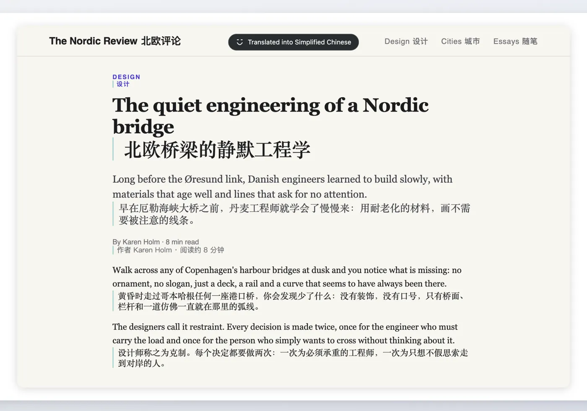
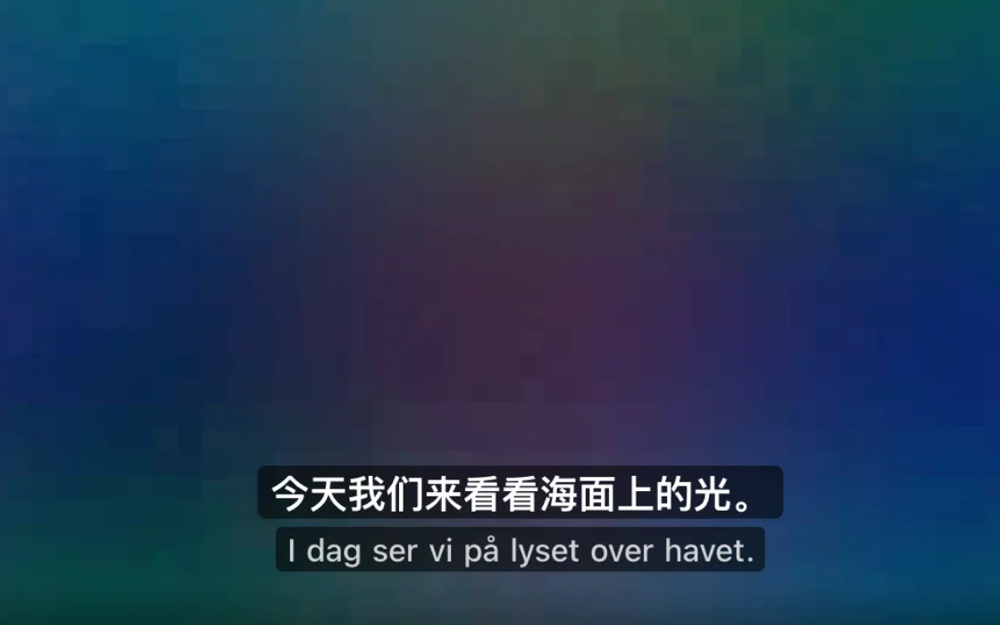

Danish subtitles, translated into Simplified Chinese as the video plays
What it does
Two things, carried across.To ting, båret over.
Ordbro is Danish for “word bridge”. It takes the page you are reading, or the video you are watching, into your own language, whatever language it started in.

Web pages · free
The whole page, visible text first.
Translate a page beside the original or in place. What is on screen is translated first, the rest as you scroll. Select a few words to translate just those, or look them up, break a sentence down, or send it to Anki.
On request
Always translate
Never translate

Video subtitles · Ordbro Pro
Press play. The subtitles follow.
Ordbro finds a video's subtitle file, translates it ahead of playback and shows it in a layer of its own, in step with pause, seeking, speed and fullscreen. The captions are styled after Apple TV and sized to the video, not the page.
YouTube
DRTV
Netflix
Prime Video
Bilibili
Crunchyroll
+ sites you allow
Three reading modes
Read it your way.Læs det på din måde.
Your language, the original out of the way.The translation under each paragraph.The page exactly as it was; requests pause.
DESIGN设计
The quiet engineering of a Nordic bridge北欧桥梁的静默工程学
Long before the Øresund link, Danish engineers learned to build slowly, with materials that age well and lines that ask for no attention.早在厄勒海峡大桥之前，丹麦工程师就学会了慢慢来：用经得起岁月的材料，画不需要被注意的线条。
Walk across any of Copenhagen’s harbour bridges at dusk and you notice what is missing: no ornament, no slogan, just a deck, a rail and a curve that seems to have always been there.黄昏时走过哥本哈根任何一座港口桥，你会发现少了些什么：没有装饰，没有口号，只有桥面、栏杆，和一道仿佛一直就在那里的弧线。
A sample. Ordbro does this to the real page, and switching back to the original puts it back exactly as it was, without a reload.
How subtitles keep up
It reads ahead of the video.Den læser forud for videoen.
−45 splayhead+8 minlater
Nearest lines first. Up to 40 at a time, with the six lines before them and the four after, so names and pronouns stay consistent.
Eight minutes ahead. The buffer follows the playhead. Jump from minute 5 to minute 45 and it translates around minute 45, never the forty minutes in between.
A little behind. The last 45 seconds stay ready, so a short rewind is instant.
Nothing you skip. Lines you never reach are never sent. Watch it again and the cache answers, at no cost.
Your service, your key
Pick the engine. Pay it directly.Vælg motoren. Betal den direkte.
Paste a key once and press Check connection. The provider bills you directly; Ordbro never sees the money or the text.
AI SERVICES
OpenAI
Anthropic Claude
Google Gemini
DeepSeek
Mistral
xAI
Groq
OpenRouter
Moonshot (Kimi)
Zhipu
Alibaba
Volcengine
SiliconFlow
MiniMax
any OpenAI-compatible endpoint
local models such as Ollama
MACHINE TRANSLATION
DeepL
Google Cloud Translation
Azure Translator
Baidu
Tencent
Youdao
Privacy
Nothing in the middle.Intet imellem.
Goes to the provider you chose
The text you ask it to translate
Subtitle lines in batches, with a few lines of context
The page or programme title, to keep the translation consistent
Never happens
An Ordbro server, an account, analytics, ads or tracking
Your key going anywhere but your provider
Login and payment pages being translated or cached
Price
Ordbro is a free download, and web page translation is free. Video subtitle translation is part of Ordbro Pro, a $3.99 one-time purchase with Family Sharing — no subscription. Translations are cached on your Mac, so reading or watching the same thing again costs nothing.
What you need
macOS with Safari, a translation provider and that provider's API key. There is nothing to sign up for in Ordbro itself.
Subtitle translation needs a video that actually has subtitles. DRTV is available in Denmark and requires a free DR login to play; Ordbro neither changes nor bypasses that.
Ordbro is an independent app and is not affiliated with, endorsed by or sponsored by DR (Danmarks Radio), YouTube, or any other site whose pages or subtitles it can translate.
Need help with Ordbro?
Enabling the extension, choosing a provider, missing subtitles and restoring Ordbro Pro are answered on the support page.